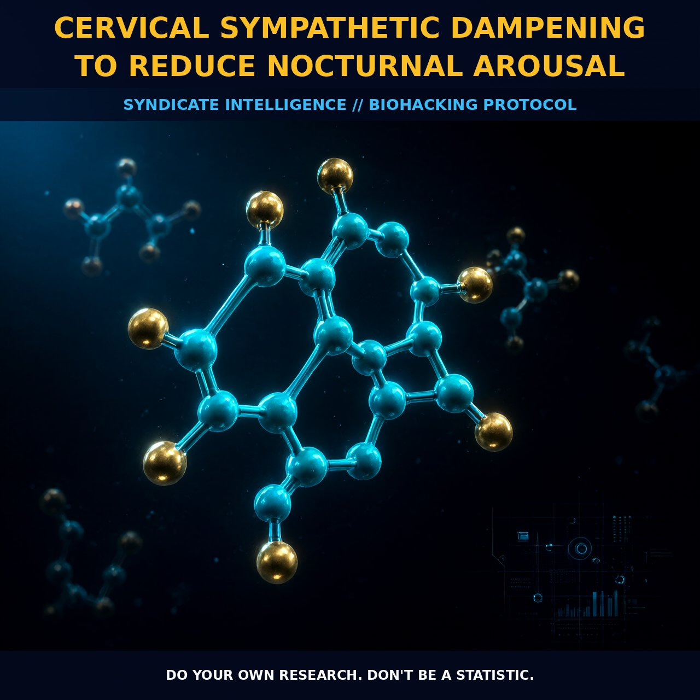

Cervical Sympathetic Dampening: Optimizing HRV and Adrenal Dynamics

1. Cervical Sympathetic Dampening: The Mechanism
Cervical sympathetic dampening is a precise modulatory process that shifts the autonomic nervous system from a state of high-frequency vigilance to physiological readiness for sleep. The sympathetic branch, governing the fight-or-flight response, typically keeps arousal pathways open and metabolic output elevated even during rest periods. By actively reducing this sympathetic tone prior to bed, we prevent the nighttime spikes in heart rate variability components that notoriously fragment deep sleep architecture.
This mechanical reduction of arousal is inextricably linked to respiratory mechanics and circulatory dynamics. Breathing inefficiencies often trigger sympathetic surges as the body works harder to maintain gas exchange, leading to micro-awakenings and increased cortisol production upon awakening. Opening the respiratory tract through nasal breathing reduces the physical load on the sympathetic chain, allowing for a smoother transition into sleep characterized by lower heart rates and higher high-frequency components in night-time HRV readings.
2. Biological Leverage: Maximizing Restorative Cycles
The biological leverage of this approach lies in its ability to preserve REM and delta sleep cycles without requiring extended total sleep time. Research indicates that maximizing the proportion of REM sleep to 20–25 percent and deep sleep to 10–20 percent yields restorative benefits comparable to eight hours of traditional sleep, provided arousal levels remain suppressed.
Furthermore, the interplay between light stimulation and the adrenal response creates a powerful leverage point. Manipulating morning light exposure can preemptively dampen the stress response before it fully activates. When combined with inverted body positions, blood circulation improves in both the skin and the adrenal glands. This mechanical inversion helps reset the baroreceptor reflexes, signaling the brainstem to lower sympathetic outflow and prepare the body for extended physiological downtime.
3. Tactical Implementation: The Protocol
Implementation begins with respiratory optimization one hour before bed. Breathe exclusively through the nose, utilizing nasal strips or saline sprays if congestion is present, to reduce the work of breathing and lower sympathetic drive immediately.
Follow this with 8 minutes of passive inversion by lying on your back with legs elevated against a wall. This position supports the adrenal glands through gravitational assistance, lowering the stress response by improving venous return and stabilizing blood pressure. For sensory support, listen to binaural beats to entrain brainwaves to sleep-promoting frequencies, avoiding low-frequency noise that triggers cortisol awakening responses.
Upon waking, jump-start your system with 400 ml of water mixed with half a teaspoon of table salt within 30 minutes. This hydration and electrolyte balance supports adrenal function, ensuring the sympathetic dampening achieved at night persists into the next day’s activity.
4. Prostar Life Hack
The Pre-Sleep Baroreceptor Reset: Spend exactly 8 minutes in a passive inverted position (legs up the wall) after nasal cleansing. This mechanical inversion forces venous return, triggers the baroreceptor reflexes, and signals the brainstem to forcibly lower sympathetic outflow, creating an immediate chemical environment conducive to deep, unfragmented sleep.
Prostar Life Hack
Spend exactly 8 minutes in a passive inverted position (legs up the wall) after nasal cleansing. This mechanical inversion forces venous return, triggers the baroreceptor reflexes, and signals the brainstem to forcibly lower sympathetic outflow, creating an immediate chemical environment conducive to deep, unfragmented sleep.
[ AUTHOR: LEAD TECHNICAL RESEARCHER ]
[FRESH ON CHAIN: 223a92a597cffc7b... ]